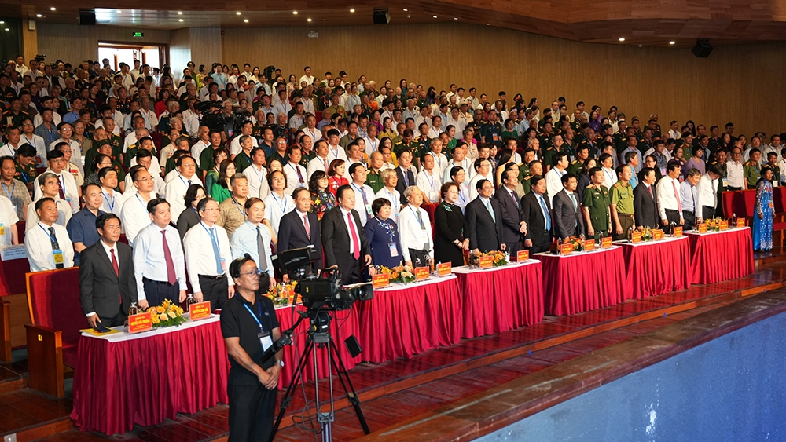
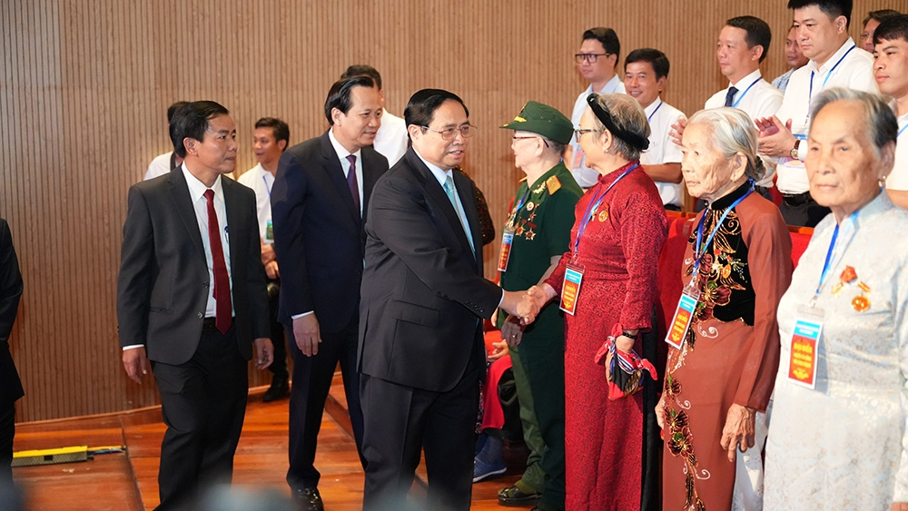

Hội nghị có sự tham dự của 300 đại biểu là người có công với cách mạng tiêu biểu được lựa chọn từ cơ sở, trong đó có 12 đại biểu là cán bộ lão thành cách mạng, cán bộ tiền khởi nghĩa; 8 Mẹ Việt Nam anh hùng; 48 Anh hùng lực lượng vũ trang nhân dân, anh hùng lao động thời kỳ kháng chiến; hơn 100 thương binh, trong đó có 25 thương binh suy giảm khả năng lao động từ 81% trở lên, 31 bệnh binh, 64 thân nhân liệt sĩ và các đại biểu người có công với cách mạng tiêu biểu khác. Đặc biệt, trong số các đại biểu tham dự buổi gặp mặt có 25 đại biểu là người dân tộc thiểu số như: Hà Nhì, Hrê, Khmer, Mường, Nùng, Paco, Tà Riêng, Tày, Thái, Xê Đăng.
 Toàn cảnh Hội nghị biểu dương người có công với cách mạng tiêu biểu toàn quốc năm 2023.Phát biểu chào mừng hội nghị, ông Nguyễn Văn Phương - Chủ tịch UBND tỉnh Thừa Thiên – Huế khẳng định: Thừa Thiên - Huế là địa bàn trung kiên, anh dũng, kiên cường trong 2 cuộc đấu tranh giải phóng đất nước. Toàn tỉnh, có 82 tập thể được phong Anh hùng lực lương vũ trang nhân dân (LLVTND), 66 tập thể trên địa bàn tỉnh được phong tặng Anh hùng Lao động thời kỳ đổi mới, gần 89.000 người có công với cách mạng. Trong đó, có 2.473 Bà mẹ Việt Nam, 50 Anh hùng LLVTND, Anh hùng Lao động thời kỳ đổi mới, 457 cán bộ lão thành cách mạng, cán bộ tiền khởi nghĩa, gần 19.000 nghìn liệt sĩ được công nhận, ghi danh; có trên 13.000 thương binh, bệnh binh, hơn 15.000 người hoạt động kháng chiến giải phóng dân tộc, bảo vệ tổ quốc và làm nhiệm vụ quốc tế, có trên 4.000 người tham gia kháng chiến và con đẻ của họ được giải quyết hưởng chế độ chính sách của Đảng và Nhà nước...
Ông Đào Ngọc Dung – Bộ Trưởng Bộ Lao động - Thương binh và Xã hội nhấn mạnh: Hội nghị này thể hiện tình cảm, trách nhiệm của Đảng, Nhà nước đối với công tác chăm sóc người có công với cách mạng. Đây là dịp để các thế hệ cán bộ, đảng viên, chiến sĩ và nhân dân cả nước, tri ân, tôn vinh người có công với cách mạng và thân nhân người có công với cách mạng - những người đã đóng góp công lao to lớn vào sự nghiệp cách mạng giải phóng dân tộc, xây dựng, bảo vệ Tổ quốc, là những tấm gương sáng ngời về chủ nghĩa anh hùng cách mạng cho thế hệ đời đời ghi nhớ, tri ân và biết ơn sâu sắc.
Thời gian qua, Bộ Lao động - Thương binh và Xã hội đã tham mưu, trình Thủ tướng Chính phủ trình Chủ tịch nước ban hành Quyết định số 715/QĐ-CTN ngày 19/6/2023 về việc tặng quà cho người có công với cách mạng nhân dịp kỷ niệm 76 năm Ngày Thương binh - Liệt sĩ. Đồng thời, trình Chính phủ ban hành Nghị định điều chỉnh mức chuẩn trợ cấp ưu đãi người có công với cách mạng từ 1/7/2023. Theo đó, đề xuất điều chỉnh mức chuẩn trợ cấp người có công từ 1.624.000 đồng lên 2.055.000 đồng, tương ứng mức tăng 26,54%.
Phát biểu tại hội nghị, Thủ tướng Phạm Minh Chính nhấn mạnh: Trong suốt 76 năm qua, Đảng, Nhà nước ta luôn đặc biệt quan tâm lãnh đạo, chỉ đạo làm tốt công tác đền ơn, đáp nghĩa và ban hành nhiều chủ trương, chính sách để hỗ trợ cụ thể, thiết thực, hiệu quả đối với thương binh, bệnh binh, thân nhân liệt sĩ, những người có công với cách mạng, coi đây là nhiệm vụ chính trị quan trọng, thường xuyên của mình.
Đời sống của người có công và gia đình người có công với cách mạng không ngừng được nâng lên và được cải thiện về vật chất và tinh thần. Đến nay, 99% hộ người có công có mức sống bằng hoặc cao hơn mức sống trung bình của người dân nơi cư trú, 99% xã, phường làm tốt công tác thương binh, liệt sĩ và bệnh binh.
 Thủ tướng Phạm Minh Chính thăm hỏi các Mẹ Việt Nam anh hùng tham dự Hội nghị biểu dương người có công với cách mạng tiêu biểu toàn quốc năm 2023.Thủ tướng Phạm Minh Chính cũng đề nghị các cấp, các ngành, các địa phương tiếp tục thực hiện thật tốt chủ trương của Đảng, chính sách, pháp luật của Nhà nước, đẩy mạnh hơn nữa công tác chăm sóc thương binh, bệnh binh, gia đình liệt sĩ, người có công với cách mạng, cần trong đó tập trung vào các nhiệm vụ: Phát huy mạnh mẽ truyền thống “Uống nước nhớ nguồn”, “Ăn quả nhớ người trồng cây”, quán triệt sâu sắc và triển khai thực hiện hiệu quả Nghị quyết Đại hội Đảng toàn quốc lần thứ XIII, Chỉ thị của Ban Bí thư về tiếp tục tăng cường sự lãnh đạo của Ðảng đối với công tác người có công với cách mạng, Pháp lệnh ưu đãi người có công với cách mạng.
Tiếp tục rà soát, nghiên cứu, hoàn thiện và thực hiện tốt hơn nữa chính sách, pháp luật đối với người có công kịp thời, hiệu quả, bảo đảm người có công và gia đình có mức sống từ trung bình khá trở lên trong địa bàn với tinh thần không để người có công nào không được hưởng chính sách ưu đãi của Đảng và Nhà nước ta. Tăng cường thu hút nguồn lực xã hội, thực hiện tốt các phong trào Đền ơn đáp nghĩa như: Xây Nhà tình nghĩa, Quỹ đền ơn đáp nghĩa, tặng Sổ tiết kiệm tình nghĩa, phụng dưỡng các Mẹ Việt Nam Anh hùng...; góp phần bù đắp những thiệt thòi của người có công và gia đình có công với cách mạng trong sự nghiệp xây dựng và bảo vệ Tổ quốc chúng ta.
Các cấp chính quyền cơ sở tạo điều kiện thuận lợi, nghiên cứu ban hành các cơ chế, biện pháp hỗ trợ cụ thể, thiết thực, hiệu quả, phát huy vị trí, vai trò của người có công, thương binh, bệnh binh và gia đình, nhất là trong phát triển sản xuất kinh doanh, kinh tế hộ gia đình, đóng góp ngày càng nhiều cho cộng đồng, cho xã hội và cho đất nước chúng ta.
Dịp này, Thủ tướng Chính phủ Phạm Minh Chính đã tặng quà và kỷ vật chiến tranh cho các cán bộ đi B. Lãnh đạo Đảng, Nhà nước trao quà cho các đại biểu đại diện cho những người có công với cách mạng và Mẹ Việt Nam Anh hùng.